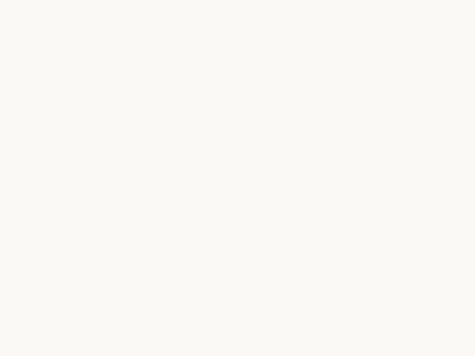
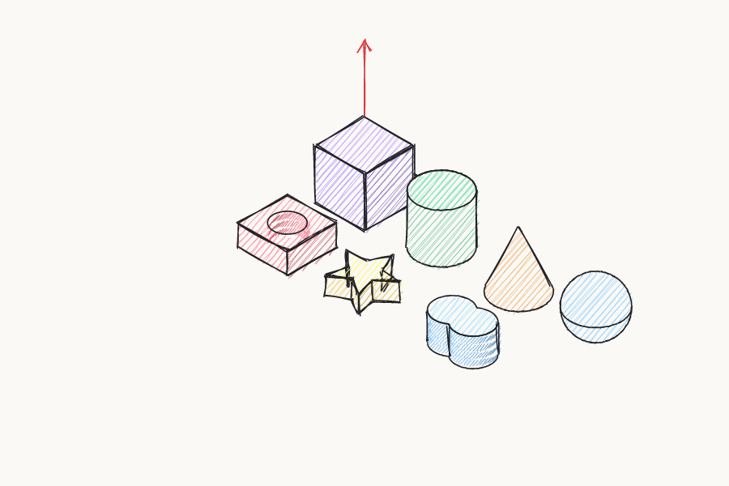
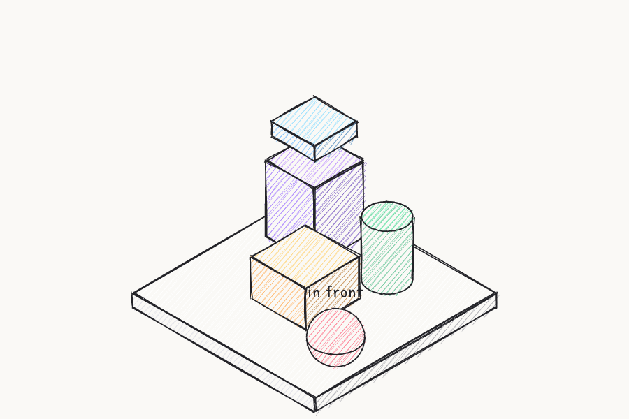
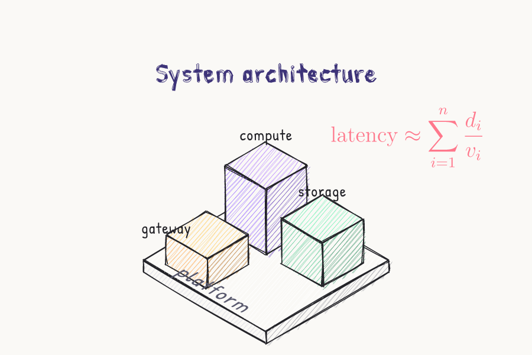
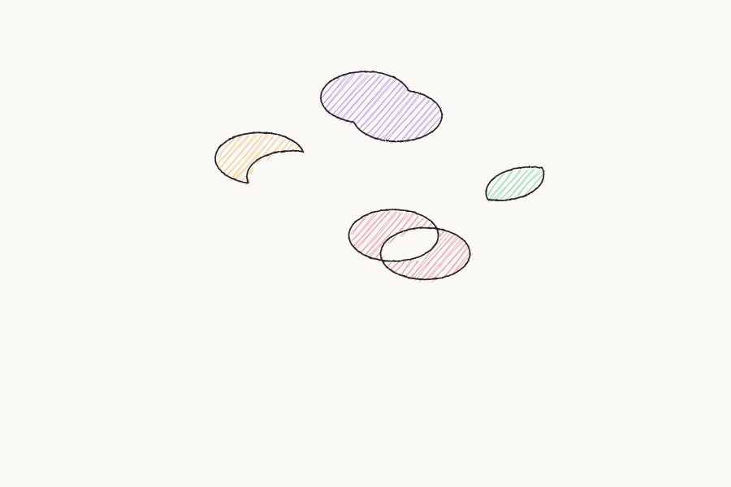

Animations that look sketched on a whiteboard.
Write a short script, get an mp4, gif or png. Isometric solids, flat shapes with boolean operations, morphing, groups, themes and handwritten LaTeX, all behind a small API that fits on one page.
use rough_animations::prelude::*;
fn main() -> Result {
let mut s = Stage::new(900, 600);
let tower = s.add(
cuboid(80, 110, 80).base_at((0, 0, 0)).fill("purple"),
);
let note = s.add(text("compute").at((0, 150, 0)));
s.play(create(tower)); // outline traced, then filled
s.play(write(note));
s.play(all([
move_by(tower, (100, 0, 0)),
fill_to(tower, "rose"),
]).duration(1.5));
s.wait(0.5);
s.render("out.mp4") // or .webm .gif .png
}
Everything a whiteboard has
Small pieces that combine. Positions are tuples, colours are names, numbers can be ints or floats.
Isometric solids
Cuboids, cylinders, cones, spheres and extruded prisms. Nearer objects hide the ones behind them, so stacking just works.
Boolean shapes
Combine flat shapes with union, intersect, minus and xor, then extrude the result into a solid with holes.
Morphing
Turn any flat shape, or any extruded solid, into any other. Outlines are paired and interpolated for you.
Handwritten LaTeX
Formulas typeset by LaTeX and written on letter by letter. Add .handwritten() for a pen-drawn look.
Composable motion
Animations are values. Tweak them with .duration() and .ease(), group them with all, seq and lag.
Groups
Build a rover or a character from parts, then move, turn, scale and fade it as one. Each part stays an ordinary object.
Themes
Six built in: light, dark, chalkboard, blueprint, sepia and terminal. One call changes the page and every default colour.
Layout in pixels
Place titles and labels by screen pixel, tag objects and add a heading, with no world-coordinate arithmetic.
Agent friendly
Scenes are a handful of lines, and the repo ships a skill that teaches the draw-a-still-first workflow. Install it with one command.
Three steps to a video
Add objects, play animations, render. A stage plays once, so build a fresh one per video.
Add
Every shape is one function returning an Object. Chain builders to place and colour it.
let a = s.add(circle(50).fill("purple"));Play
Animations are values you build, tweak, combine and hand to play.
s.play(create(a));
s.play(morph(a, star(5, 70, 30)));Render
The extension picks the output: mp4, webm or gif for video, png for the last frame.
s.render("out.mp4")See the code behind it
Each tab is a complete program you can paste into src/main.rs.
use rough_animations::prelude::*;
fn main() -> Result {
let mut s = Stage::new(900, 600);
s.add(cube(70).base_at((-150, 0, 0)).fill("purple"));
s.add(sphere(36).base_at((-40, 0, 0)).fill("sky"));
// Combine flat shapes, then extrude the result into a solid with a hole.
let plate = rect(80, 80).minus(circle(25));
s.add(prism(plate, 30).base_at((90, 0, 0)).fill("rose"));
s.render("shapes.png")
}
use rough_animations::prelude::*;
fn main() -> Result {
let mut s = Stage::new(900, 600);
let a = s.add(circle(50).fill("purple"));
let b = s.add(cuboid(60, 60, 60).base_at((120, 0, 0)).fill("mint"));
s.play(all([create(a), create(b)]).duration(1.2));
s.play(morph(a, star(5, 70, 30)).ease(Easing::BackOut)); // circle into a star
s.play(lag(0.3, [move_by(a, (0, 0, 80)), move_by(b, (0, 0, 80))]));
s.play(rotate_by(b, (0, deg(90), 0)).duration(1).delay(0.5)); // duration first, then delay
s.render("anim.mp4")
}
use rough_animations::prelude::*;
fn main() -> Result {
let mut s = Stage::new(900, 600);
let mut rover = Group::new();
s.add_to(&mut rover, cuboid(120, 30, 70).base_at((0, 10, 0)).fill("white"));
s.add_to(&mut rover, cylinder(14, 10).at((40, 14, 40)).rotated((deg(90), 0, 0)).fill("ink"));
s.add_to(&mut rover, cylinder(14, 10).at((-40, 14, 40)).rotated((deg(90), 0, 0)).fill("ink"));
s.play(rover.create()); // the parts build up one after another
s.play(rover.move_by((80, 0, 0)).duration(2)); // the whole rover drives
s.play(rover.rotate_by((0, deg(90), 0))); // and turns on the spot, wheels included
s.render("rover.mp4")
}
use rough_animations::prelude::*;
fn main() -> Result {
let mut s = Stage::new(1280, 720).zoom(1.4);
let title = s.add(text("Hello").font_size(90).color("#3c3278").animate().at(s.pixel(640, 120)));
let formula = s.add(math(r"\int_0^1 x^2\,dx = \frac{1}{3}")?.font_size(70).color("rose").handwritten().at(s.pixel(640, 320)));
s.play(write(title));
s.play(write(formula).duration(2));
s.render("hello.mp4")
}
use rough_animations::prelude::*;
fn main() -> Result {
// One word changes the page and every default colour: "dark", "chalkboard",
// "blueprint", "sepia", "terminal" or "light".
let mut s = Stage::new(900, 600).theme("chalkboard").wobble(8);
s.heading("Chalkboard", "the same script works in any theme");
let c = s.add(cube(80).base_at((0, 0, 0)).fill("mint"));
s.play(create(c));
s.render("chalk.mp4")
}
Gallery
Every image here comes from a script in examples/.

Built to be driven by an AI agent
You cannot watch a video, but you can sample one. The bundled skill teaches the loop: write a short script, draw a still first, then check the motion from a contact sheet of frames. Install it from the plugin marketplace, or with a one-line script that works for any agent.
Using it with agents →# install the skill (Claude Code)
/plugin install rough-animations --marketplace Super-Yojan/rough-animations
# then look at what you made
S=~/.claude/skills/rough-animations/scripts # wherever the skill lives
$S/contact-sheet.sh target/out.mp4 1.5 4 target/sheet.png
$S/frame.sh target/out.mp4 -0.5 target/end.png